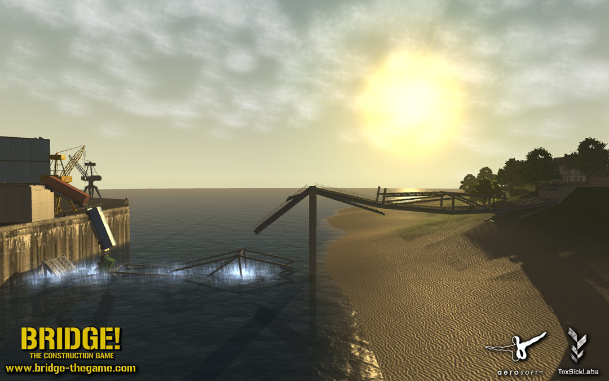
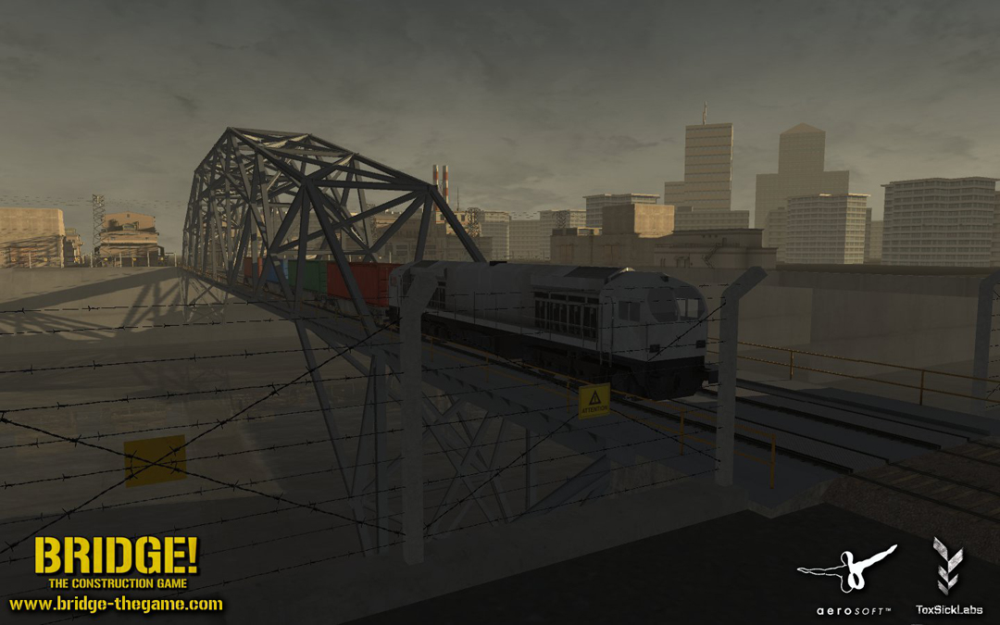
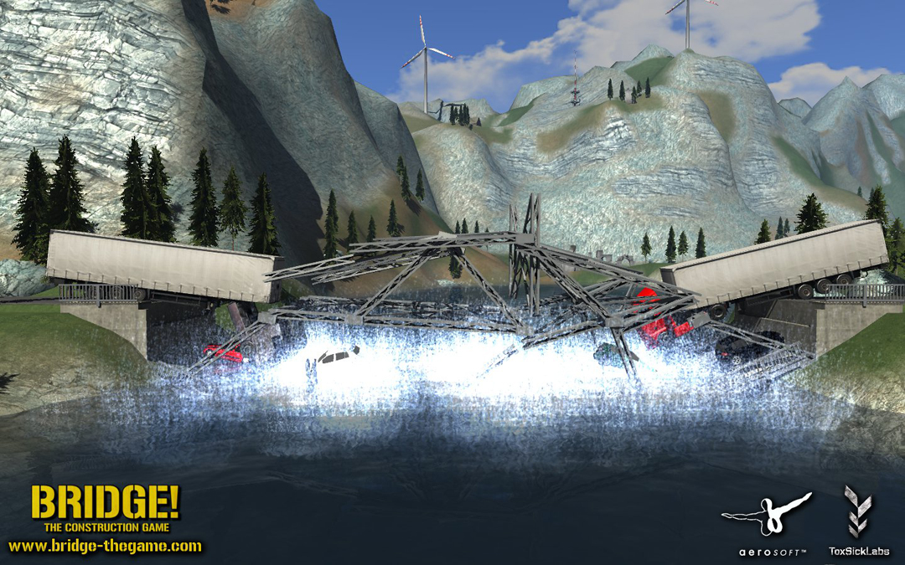

I want to officially unveil the project Jack and me and a few freelancers worked at for a while now.
And special thanks to DexSoft for there very well designed model packs.
In Bridge! you actually build bridges and let them pass different tests. For indept information feel free to visit http://www.bridge-thegame.com/
There are also a couple more screenshots available. The official box release is 31.03.2011. The download version will be available probably in February. I'll edit my post as soon as I know a precise date.
Ok Folks, there is an official Demo available now. Grab it from here:
http://www.aerosoft2.de/downloads/bridg ... !_DEMO.zip
@Eric: Feel free to grab some shots from the page.
[EDIT]: Screenshots are cropped, rightclick them or check them at http://www.bridge-thegame.com/
Sorry for the inconvenience


